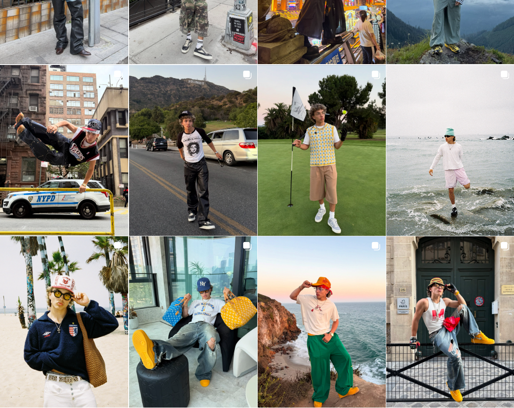

This page represents the polished, curated state of the feed. Here, athletes and influencers appear in perfect balance — their identities shaped by metrics, angles, and brand aesthetics. Hopefully, I will be able to create a collage of images, similar to that of an instagram grid, to portray this.
